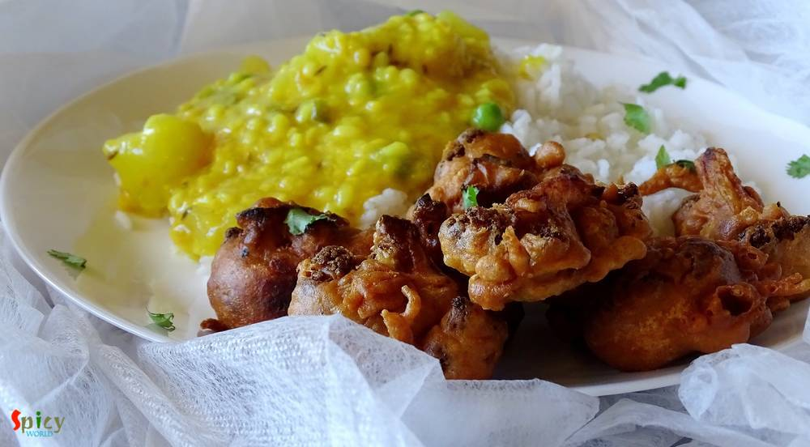

Simple and Easy Recipes

Nonveg Recipe
Feb 24, 2016
This is my first try on 'Prawn Biriyani' and I pretty much nailed it. I have made this biriyani in classic way, everything is cooked by 'dum' and also in sealed vessel. The taste and aroma was phenomenal. The flavour of fresh shrimps and long grain basmati rice gave this dish a unique taste, very much different from chicken / mutton biriyani. We both enjoyed it with chicken curry. You have to try ...

")
Nonveg Recipe
Feb 22, 2016
I am a beginner in the baking world. 'Vanilla sponge Cake' without oil and butter is my second successful cake. The taste was quite good and I was really impressed by its texture. In this sponge cake the key ingredient is egg. Egg whites will make this cake spongy and fluffy. You can enjoy it as snack or with a cup of tea.

Nonveg Recipe
Feb 19, 2016
A good Indian maincourse dish is always paired well with various types of pulao or many types of bread. But sometimes pulao itself can become a very rich and heavy dish. Yes, I am talking about 'mutton pulao'. In this recipe, the rice will be cooked with the tasty mutton stock (yakhni). That is why this type of pulao become rich itself. We both are very much fond of 'yakhni pulao'. You just have t ...

Veg Recipe
Feb 15, 2016
'Palak paneer' is a famous north indian dish. This is a hit item for spinach lovers. After adding heavy cream the texture will make you greedy. Palak paneer's smooth, rich and velvety gravy is beyond everything. It goes very well with butter naan. It's a no onion and no garlic recipe

Nonveg Recipe
Feb 12, 2016
I am not a fan of dessert, but do love cakes and brownies. Some of my friends are always preparing desserts and that always keep inspiring me, so this time I thought of preparing something. As this was my first time on brownie, didn't want to take any risk. So, I've made these chocolate brownies with 'Betty Crockers' brownie mix. The result was fantastic 'he' didn't find any difference between the ...

Nonveg Recipe
Feb 11, 2016
My husband is a craaaazzyyyyy BiriYani lover. So, I thought what could be more exciting than a biriyani treat to him on V day!!! To cook something special, what he loves, will be the perfect way to express my feelings to him on this perfect day. I researched a lot upon new ideas of biriyani, then my eyes got stuck on Chef Sanjay Thumma's 'ulta biriyani'- how beautiful it is!! I won't say that this ...

Veg Recipe
Feb 8, 2016
I am a big fan of different types of 'pulao'. One of my favorite pulao is 'Jeera Rice' because of it's saltiness and spicyness. It goes very well with many types of veg and non veg curry. The recipe is very simple and easy. You can also give 'jeera rice' in any adult's lunch box with dry curry, every combo will become great. Try this in your kitchen and let me know how it turns out.

Veg Recipe
Feb 8, 2016
We Indians are crazy about 'pakore' .. don't you think so ?? We make fritters out of almost everything - 'potato', 'eggplant', 'okra', 'cabbage', 'chili', 'lentils', 'chicken', 'fish' and so many more ?. 'He' adores only two vegetables in his life, one is potato and the other one is cauliflower. You can impress him with any type of cauliflower dish. So, is there any doubt about what I'm talking a ...

Veg Recipe
Feb 5, 2016
Sometimes, specially in weekdays, I just want to spend very little time in kitchen but also cook some tasty foods. 'Dahi Aloo' is one of the quickest and tastiest maincourse I found out. You have to cook the crumbled and boiled potatoes in a spicy, tangy yogurt sauce. It is that simple, can you imagine ? This is also a no onion and no garlic recipe, best for puja days or 'vrat' days. You can pair ...
Jan 31, 2016
I am a homemaker and a food blogger. Both my husband and me love to eat different food as well as travel various US cities. I was planning to share our travel and food experience with you. Presently we are staying at Austin and our last trip was to California on June, 2015. You can think of how much bore we were for not going outside Austin for past 7 months. We celebrated 'Durga Puja', 'Christmas ...